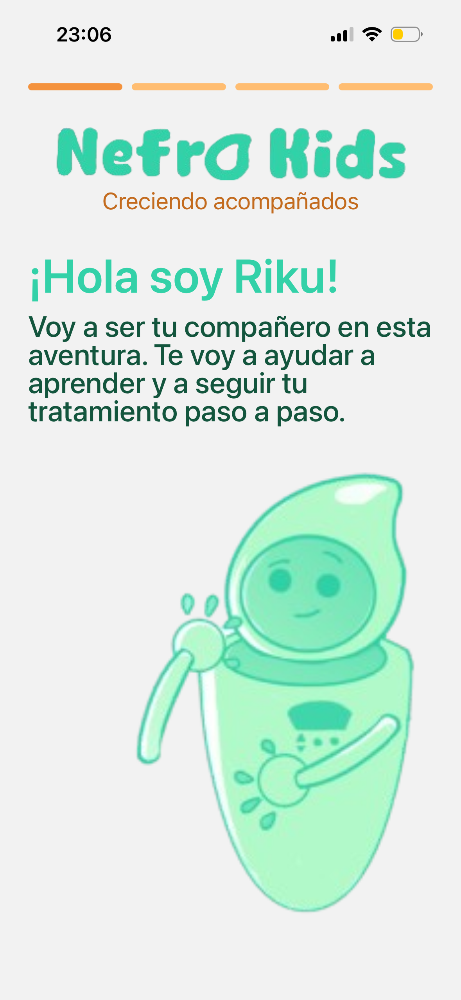
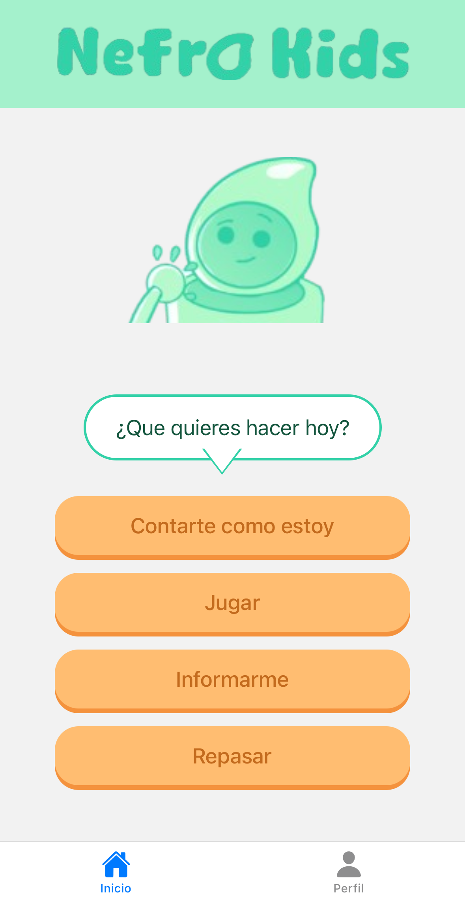

Preparación del tratamiento
Aprender la importancia del lavado de manos, la higiene y la preparación del entorno antes de comenzar.
NefroKids es una plataforma educativa e interactiva que busca ayudar a niños y niñas en diálisis peritoneal a comprender, practicar y reforzar los procedimientos de su tratamiento mediante experiencias gamificadas, con el acompañamiento de profesionales de la salud.
Cada día, miles de niños que realizan diálisis peritoneal deben aprender procedimientos complejos que requieren precisión, constancia y responsabilidad.
La educación suele apoyarse en explicaciones verbales, folletos o demostraciones presenciales, recursos que muchas veces resultan difíciles de mantener en el tiempo, especialmente para pacientes pediátricos.
NefroKids nace con un objetivo claro: transformar el aprendizaje del tratamiento en una experiencia más accesible, comprensible y motivadora.

NefroKids es una aplicación educativa que combina videojuegos, simulaciones y actividades interactivas para enseñar conceptos fundamentales sobre la diálisis peritoneal infantil.
La plataforma está diseñada para complementar la educación brindada por los equipos médicos, nunca para reemplazarla.
El contenido se organiza en niveles que aumentan gradualmente en complejidad para acompañar la evolución del paciente.
Aprender la importancia del lavado de manos, la higiene y la preparación del entorno antes de comenzar.
Realizar paso a paso las acciones necesarias para una sesión de diálisis mediante simulaciones guiadas.
Memotests, desafíos y actividades que ayudan a reforzar conceptos importantes de forma entretenida.
Cada nivel incorpora nuevos conocimientos y aumenta gradualmente la complejidad para acompañar la evolución del paciente.
El contenido educativo se desarrolla en conjunto con médicos especialistas y profesionales de la salud vinculados a la nefrología pediátrica, buscando mantener el rigor científico mientras se adapta el lenguaje y la experiencia al público infantil.
Para aprender y practicar el tratamiento de manera dinámica.
Como herramienta de apoyo durante el proceso de adaptación al tratamiento.
Como recurso complementario para la educación del paciente.
NefroKids combina desarrollo de videojuegos, diseño centrado en el usuario y educación médica para crear una experiencia atractiva y fácil de utilizar.
La plataforma está siendo desarrollada utilizando tecnologías modernas que permiten construir experiencias interactivas y escalables.

Estamos construyendo los primeros módulos educativos y validando el contenido junto a profesionales de la salud para asegurar una experiencia útil, rigurosa y de calidad.
Definición de objetivos educativos junto a profesionales de la nefrología pediátrica.
Desarrollo de niveles, simulaciones y juegos educativos iniciales.
Revisión del contenido para garantizar rigor y calidad médica.
Abiertos a colaborar con hospitales, instituciones, profesionales e investigadores.
Somos un equipo interdisciplinario conformado por estudiantes de informática y colaboradores del área de la salud que compartimos el objetivo de acercar herramientas tecnológicas innovadoras a la nefrología pediátrica. Creemos que aprender un tratamiento no debería ser una experiencia intimidante, sino una oportunidad para ganar confianza, autonomía y seguridad.
Rol del integrante
Rol del integrante
Rol del integrante
Rol del integrante
Nos encantaría conversar.